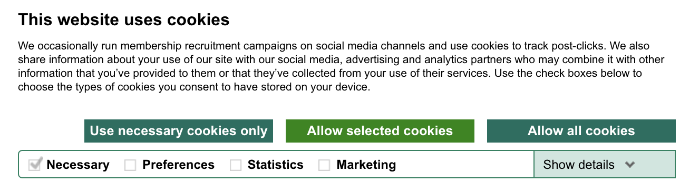

Introduction
How often do you go on a website to find a recipe, or read the news, and you’re greeted by one of these:
A cookie banner. You click “I agree” to make it go away, and think nothing of it. A few minutes later, you go to another website to book a flight, or download a paper. You’re greeted by this:

Another cookie banner.
Cookie consent banners are everywhere, all over the internet today. No matter which website it’s on, this story usually ends the same way: with you clicking ‘Accept’, ‘Allow’, ‘Agree’, ‘Okay’, or some such positive response to the banner’s (rhetorical) question, a chorus of compliance to a request that isn’t really a request.
This is not informed consent. Rather, it is a banal and coerced gesture stemming from centuries of systematic data collection without permission. Furthermore, this “consent” can have wide-ranging consequences. You’re probably familiar with the most prevalent use of this ill-begotten data, targeted advertising. However, the consequences of cookie-based tracking extend to price gouging, imprisonment, and targeted social oppression, all stemming from the clicking of a single button: “Accept All”.
In ‘How Data Happened’, Wiggins and Jones deliver a narrative of how data began to influence every aspect of our lives. From censuses used by governments to document and categorize residents, to eugenics used to replace natural with man made selection, to today’s complex facial recognition algorithms used to check us into flights, as well as models to predict recidivism, data and the algorithms borne from them have forever changed our society. This article is meant to serve as a sort of companion piece, because we simply cannot talk about data without talking about the individuals from whom this data was collected, and the rights to privacy, or lack thereof, bestowed upon them by those in power. If Wiggins and Jones tell the story of how data happened, then I am trying to tell the story of how consent happened, or more appropriately, didn’t happen.
Before Privacy
As Wiggins and Jones note, large scale data collection is far from a new phenomenon. Those with power have catalogued and categorized those without for their own ends almost since the beginning of time itself. This trend continues today, but the institutions in power have shifted. From ancient dynasties to medieval kingdoms, Enlightenment-era governments, and today’s online platforms, powerful institutions have long sought to collect data on their “subjects”, rarely with consent, but always with consequence.
Long before modern bureaucracies, the Han Dynasty in China conducted one of the earliest known population censuses, recording nearly 58 million people in 2 AD. The Chinese state used these numbers to levy taxes and conscript labor, with far-reaching control over livelihoods. This effort treated individuals as inputs in a governance machine. The goal was not to serve subjects but to enable efficient allocation of resources across the empire.
In 1086, William the Conqueror ordered the creation of the Domesday Book—arguably England’s first national database. This massive survey cataloged landholders, livestock, and resources with near-microscopic detail, enabling the crown to tax and control the population with unprecedented precision. No one asked the subjects whether they consented to being recorded; the act of counting was an expression of conquest, of domination, not consultation. As Keith Breckenridge notes, such enumeration practices were not about individual choice but about rendering a population docile to authority.
In colonial India, an era I’m personally familiar with due to my grandparents’ lived experiences, the British census was a tool not just of counting, but of classification and control. As Arjun Appadurai writes in Number in the Colonial Imagination, enumeration in the colonies wasn't just about governance—it was about subduing a population that vastly outnumbered their own. Communities were slotted into religious, ethnic, and caste categories that often had no precedent, but once codified, became real in administrative and social life. Consent in this context wasn’t just absent by an error of omission—it was purposefully eliminated, because giving the colonized a choice in their own categorization ran counter to the colonial objective of imbuing individuals with racial identities without participation to stoke intergroup tensions and maintain supremacy.
Even in democratic contexts, the census has rarely been voluntary. The first U.S. Census in 1790 posted names and household information in public town squares, with no privacy safeguards. By the late 1800s, enslaved people were counted in fractions (⅗ at a point in time), Native Americans were excluded, and household “heads” presumed to be male. The act of data collection was framed as nation-building, but it reinforced presumed social structures rather than reflecting communities. The concept of opting out or asking for the data structure to be changed, especially when the data’s schema didn’t match lived experiences, simply didn’t exist.
The Invention of Privacy
While rulers and states have always gathered data, the idea that individuals might have a right to limit or control such collection is remarkably new. The modern concept of privacy, particularly regarding data privacy, is not an eternal value, but a relatively recent invention.
‘Privacy’ is defined by the Oxford English dictionary as ‘The state or condition of being alone, undisturbed, or free from public attention, as a matter of choice or right.’ This word was first recorded in the 1500s. However, as seen in the graph above, it didn’t really enter the popular lexicon until the mid-20th century. The seminal work that marked the shift of ‘privacy’ from a term referring exclusively to physical objects to one that encompassed informational constructs as well was Warren and Brandeis’ ‘The Right to Privacy,’ published in 1890.
In it, they build upon the constitutionally enshrined ‘Right to Property,’ the fourth amendment to the U.S. Constitution, designed to protect Americans from unreasonable searches and seizures of their homes. Warren and Brandeis extend this constitutional logic into the realm of intangible assets, including personal data.
Their statement,“The term "property" has grown to comprise every form of possession – intangible, as well as tangible,” offers a knowing premonition of the world that we inhabit today, where our digital footprint is often more valuable to institutions than our material possessions. Today, our most monetized assets are our browsing history, location trails and behavioral patterns; entirely intangible, and yet the backbone of trillion-dollar industries.
However, Warren and Brandeis were not writing for all Americans. Their vision of privacy was rooted in the worldview of late 19th-century white, upper-class American men, landowners and professionals concerned about gossip columns. They could not reason about state surveillance of laborers, immigrants, or the formerly enslaved. Privacy, in their framing, was a protection against social embarrassment, rather than exploitation. It was about preserving one’s dignity in the face of press intrusion, not shielding all individuals from policing, classification, and profiling. Their ‘privacy’ was conceived as a right of the reputable, not the vulnerable.
Furthermore, their theory of privacy was reactive, rather than proactive. It offered a remedy after privacy violations that had occurred after a newspaper published a scandal, or a non-consensual photograph was taken. There was no concrete consent mechanism, or a framework for how individuals might set boundaries around their data, or how to obtain permission before data collection.
While Warren and Brandeis succeeded in establishing a theoretical legal basis for Privacy to enter the diachronic conversation, there was still a lot of work to be done in regards to concrete regulation with specific requirements and redress mechanisms.
The Rise of Regulation and Compliance
In the mid-20th century, privacy began its slow and uneven journey from abstract ideal to policy mandate. The turning point came in the 1960s and 70s, as governments around the world started to grapple with the implications of the then-novel paradigm of automated data processing.
In 1973, the U.S. Department of Health, Education, and Welfare (HEW) released a landmark report, recommending five Fair Information Practice Principles (FIPPs) that would become the backbone of future privacy legislation: notice, choice, access, integrity, and enforcement. A year later, the U.S. Privacy Act of 1974, one of the first attempts to regulate how government agencies collect, maintain, and share personal data, was passed. Though limited in scope, it acknowledged for the first time that citizens might deserve some rights over the information collected about them.
Meanwhile, Europe was already pushing the boundaries of what privacy could mean in the age of computers. In 1973, Sweden passed the Data Act, the world’s first national data protection law, creating a data inspection board to oversee compliance and investigate misuse. This was followed by the OECD Guidelines on the Protection of Privacy and Transborder Flows of Personal Data in 1980, which emphasized that privacy needed to be protected even across national borders. These early frameworks reflected growing anxieties about how computer systems were becoming instruments of social sorting, capable of reinforcing inequality at scale, without oversight.
Nowhere was this fear more dramatically acknowledged than in West Germany’s 1983 Constitutional Court ruling, which introduced the concept of informational self-determination. Sparked by public backlash to a proposed national census, the court ruled that individuals have a fundamental right to decide what personal information is collected and how it is used. For the first time, data privacy was framed as a constitutional protection, not just a statutory convenience. This decision reverberated far beyond Germany, laying the conceptual groundwork for later European privacy regimes, including e-privacy and GDPR.
Yet while the legal architecture of privacy was taking shape, the terrain of data collection was shifting. In earlier eras, the primary data collector was the government with its censuses, tax rolls, and registries. But by the 1980s, enterprises had begun to make use of large scale computation. Credit bureaus, telecom firms, and insurance companies began collecting, trading, and analyzing user data at scale with little to no oversight. Consent was now formalized through contracts, terms of service, and checkboxes. These were largely symbolic gestures, since any real rights were buried in fine print, or waived entirely by signing the form, a necessary precondition to access the service provided.
This was the moment consent entered mainstream legal and technical discourse, not as a meaningful safeguard, but as legal cover (what one lawyer famously described as 'CYA' (cover your ass)). The existence of a checkbox became sufficient proof that users had agreed, even when the terms were unreadable, the power asymmetry vast, and the choice illusory. What mattered wasn’t whether people understood or agreed, but whether institutions could prove they had asked.
As Wiggins and Jones argue in How Data Happened, “data systems are shaped by power, not people.” Privacy laws during this period illustrate that perfectly. Compliance was about protecting institutions from liability, not empowering individuals with control. Rights were granted on paper but rarely enforced in practice, and this trend would continue into the internet era.
Consent Theater in the Internet Era
The modern web was born with a surveillance mechanism baked into its foundation. In 1994, Lou Montulli, a Netscape engineer, invented the browser cookie, a small text file that allowed websites to remember user data between sessions. Intended as a convenience tool, the cookie quickly evolved into a powerful tracking device. Websites could now quietly monitor user behavior at scale. Soon, third-party cookies allowed advertisers and data brokers to track users across websites, constructing detailed behavioral profiles without ever asking for permission.
By the early 2000s, a new class of internet platforms had emerged whose business model depended entirely on data collection. Google, Facebook, and Amazon didn’t just host content or sell products, they orchestrated data extraction at scale. Every search, scroll, like, and click became a data point. Cookies aren’t the only tool. Browser fingerprinting, device graphs, and invisible pixels form a layered infrastructure of surveillance. Data brokers like Acxiom and Epsilon have built vast repositories of demographic, behavioral, and psychographic information, often buying or licensing cookie-derived data without the user’s knowledge.
This invisible collection sparked growing regulatory concern, particularly in Europe. The ePrivacy Directive of 2002 required user consent for storing or accessing information on a device, a mandate that was widely ignored. It wasn’t until 2018, with the rollout of the General Data Protection Regulation (GDPR), that cookie consent became unavoidable. In the U.S., the California Consumer Privacy Act (CCPA) followed in 2020, with other states—Virginia, Utah, Colorado, Texas—passing their own, often inconsistent, laws. What emerged was a patchwork of compliance regimes with varying definitions of consent, scope, and enforcement.
Rather than rethink how consent could be meaningfully obtained, most platforms responded by outsourcing the problem to Consent Management Platforms (CMPs) like OneTrust. The result was a deluge of cookie banners, pop-ups that present users with a choice, usually to “Accept” or “Manage Preferences.” These interfaces rarely reflect true user control. Instead, they are optimized for acquiescence. Obfuscated buttons, pre-checked boxes, deceptive layouts, and color cues guide users toward accepting everything. These are known as dark patterns—UI designs that manipulate choice.
Consent, in this era, has become a ritualized performance in which users play a role they did not audition for. The banner appears, the user clicks “Accept All”, the system logs it, and the data flows. The process resembles informed agreement, but it is a script designed by engineers and behavioral scientists, not by ethicists or users. As How Data Happened argues, algorithmic systems are often built with layers of intentional opacity. Consent mechanisms are no exception: companies like OneTrust A/B test different banner formats to find which layout yields the highest acceptance rate. The goal is not informed consent, it is coerced consent.
The irony is unmistakable: the more consent has become central to privacy law, the more it becomes empty in practice. What began as a safeguard has become a gesture that absolves institutions of responsibility while offering users no real power. Clicking “Accept All” is not an informed decision. It is surrender wrapped in the aesthetics of choice.
If we accept that consent, as it exists today, is an empty performance, then we must ask: What would real informed consent look like?
A Prospective Future of Consent
If today’s cookie banners are consent theater, the future must be about consent as critical infrastructure, not individual performances. For decades, the burden has been placed on users to read, interpret, and respond to every new privacy prompt or disclaimer, site by site, banner by banner. This approach is both cognitively exhausting and structurally flawed. We should not have to make privacy decisions at the speed and scale the internet demands. The next chapter of privacy and consent must reverse that burden. Rather than users responding to each request manually, I envision a world where in-browser agents act on behalf of users, alerting website providers to their pre-set data preferences.
This future is already beginning to happen. The Global Privacy Control (GPC) specification allows users to set a browser-level signal that means “Do not sell or share my personal information” which websites are legally obligated to honor in California and Colorado.
GPC represents a critical conceptual shift: instead of asking the user to click “reject” over and over, it lets them set a global signal once. But as promising as GPC is, it remains binary, brittle, and under-adopted. Websites rarely honor the signal unless GPC is enforced by regulators, which doesn’t often happen, and companies that rely on data collection have little incentive to promote or respect it. After all, a user who sets GPC effectively opts out everywhere, cutting off the data stream entirely.
I think another important question to ask here is “What if opting out of everything isn’t what users actually want?” What if they’re comfortable sharing anonymized data with retailers but not advertisers? Or allowing location tracking for product recommendations, but not for email marketing? This is where a more granular, expressive model of consent becomes necessary.
With these thoughts in mind, I developed the Data Preference Statement (DPS), a richer alternative to banner-based consent. The DPS allows users to define their preferences using simple, natural language-style statements like:
“I am willing to share anonymized data with retailers for product recommendations.”
These statements are stored in a machine-readable format and interpreted by AI agents embedded in browsers or extensions. Rather than confronting each cookie banner, users authorize an agent to act in accordance with their DPS, enforcing their preferences consistently and invisibly across the web. Companies that wish to access user data must query the agent, which can respond with permissions depending on the context and the user’s pre-set conditions.
🧪 Try it Yourself: The DPS Interface
This live interface below demonstrates how a Data Preference Statement (DPS) agent could be configured to express consent once and have it enforced across the web. It's interactive and meant for you to explore.
This model has several advantages. It removes friction for users while increasing clarity for companies. It allows consent to be expressed once and enforced continuously. And it shifts privacy from a reactive ritual to an architectural principle baked into the infrastructure of the browser itself. With DPS, consent becomes configurable, contextual, and computational.
If the present is about clicking “Accept All” or “Reject All” then the future I envision is about delegation, dignity, and design. True consent cannot emerge from coercion or fatigue. It must be intentionally authored, automated, and respected.
Conclusion: From Performance to Power
Today’s consent systems are often legal performances, rituals that check compliance boxes without respecting user agency. But as history has shown, consent has rarely been about individual choice; it has been shaped by power, paperwork, and institutional convenience. From imperial censuses to cookie banners, the mechanisms of data collection have repeatedly marginalized those they claim to include. Yet a more just future is possible; one where consent is not merely asked for but respected, not reactive but proactive, not buried in fine print but expressed clearly through user-defined preferences. The Data Preference Statement (DPS) and similar agent-driven models point toward this future: consent that is meaningful, contextual, and computable.